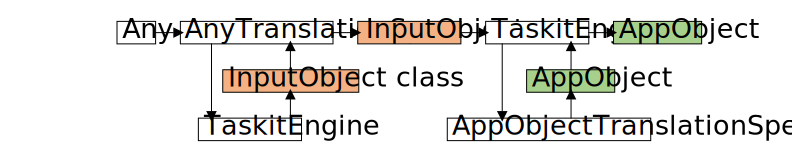
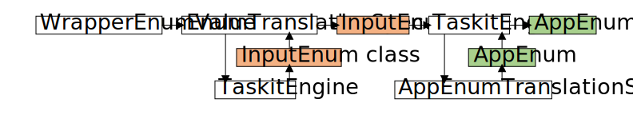
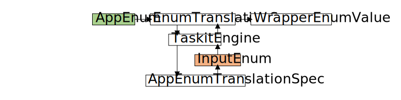
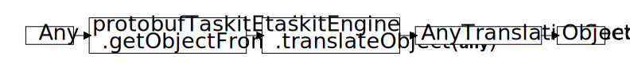
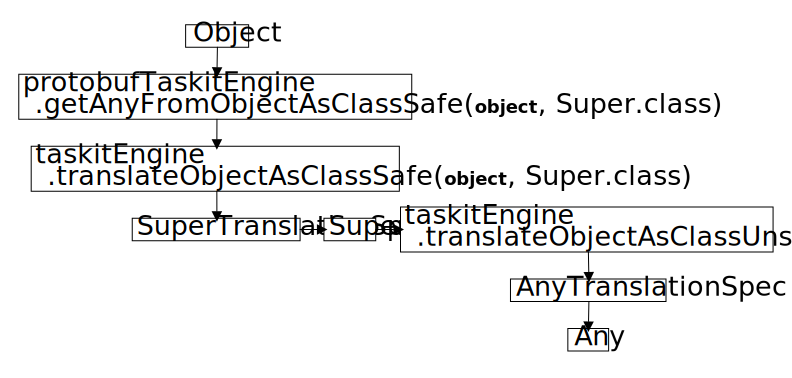
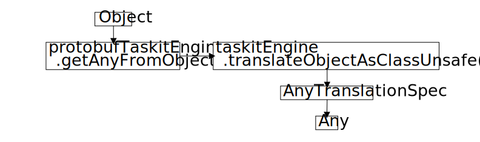

3 Protobuf Taskit Library
The Protobuf Taskit library is a version of Taskit made specifically to be used with Protobuf. It builds on the Core Taskit library and adds TaskitEngines and TranslationSpecs needed to fully support Protobuf.
The current iteration provides support for JSON and binary data formats.
All documentation from this point forward assumes you have read the Protobuf documentation and are, at a minimum, familiar with the topics listed below:
- Message types and their descriptors
- .proto files
- The Protobuf compiler
3.1 Translation
3.1.1 TranslationSpecs
The Protobuf Taskit library provides the ProtobufTranslationSpec abstract class and several concrete implementations of it.
ProtobufTranslationSpec extends TranslationSpec and establishes that it must be initialized with a ProtobufTaskitEngine type.
The primary concrete implementation is the AnyTranslationSpec. Additional implementations for scalar types and enums are provided to support the Any type. Lastly, we also provided a convenient DateTranslationSpec to translate between a Java LocalDate and a Protobuf Date.
3.1.1.1 AnyTranslationSpec
The AnyTranslationSpec translates between Java objects and a Protobuf Any message type. Protobuf does not support interfaces or inheritance, so to allow a message field to hold different concrete types, we use the Any type. For example, we can define a Food message with a single Any field. This lets us pack either a Burger or a HotDog message into that field. Later, we can unpack the Any to retrieve the original message type, thus enabling polymorphic behavior in an application.
When translating an Any type, the AnyTranslationSpec grabs the typeUrl from the message and calls the ProtobufTaskitEngine to receive the corresponding class. It then uses the class to unpack the Any type into a Protobuf message. Lastly, it calls the TaskitEngine to translate the Protobuf message into a Java object that the application can use. The diagram below shows how the provided Any type is used to unpack a Protobuf message (InputObject) which is then translated into a Java object (AppObject).
To have the AnyTranslationSpec translate a Java object into an Any type, you need to explicitly tell the TaskitEngine to translate the object as an Any.class. This ensures the TaskitEngine routes the request to the AnyTranslationSpec. If you do not specify the class, then the TaskitEngine will route the request to the TranslationSpec that translates it into its corresponding Protobuf message type, not an Any type. ProtobufTaskitEngine provides methods to get an object from an Any type and to get an Any type from an object, which will be discussed in Section 3.2.1.
When translating a Java object, the AnyTranslationSpec has three options based on the type of object it was provided:
Option 1: The provided object is a Java enum. It first calls the TaskitEngine to translate the object as an Enum.class and receives a WrapperEnumValue message. It then packs the WrapperEnumValue into an Any type and returns it. WrapperEnumValue is detailed below in Section 3.1.1.2, but is required for this specific description.
Option 2: The provided object is a Protobuf message. This may happen if the object was already translated before being sent to the AnyTranslationSpec. In this case, there is no need to translate it again so it simply packs the Protobuf message into an Any type and returns it.
Option 3: The provided object is not a Java enum or a Protobuf message. It first calls the TaskitEngine to translate the object into a Protobuf message. It then packs the Protobuf message into an Any type and returns it.
An Any message type can only wrap other Protobuf messages so it is necessary to have a way of translating Protobuf scalars and enums into a message. The Protobuf library provides message wrappers for scalars, such as BoolValue and Int32Value, and we provide convenient ProtobufTranslationSpecs (listed below) to covert between the most common ones and their Java equivalent. They are intuitive and do not require in-depth explanation.
BooleanTranslationSpec
IntegerTranslationSpec
LongTranslationSpec
StringTranslationSpec
FloatTranslationSpec
DoubleTranslationSpec
The process of wrapping an enum into a message is more complex and requires further explanation.
3.1.1.2 WrapperEnumValue
WrapperEnumValue is a Protobuf message used to wrap enums as messages so they can be packed into an Any type. It contains two strings: enumTypeUrl, which holds the enum’s full descriptor name, and value, which holds the enum’s value. The WrapperEnumValue is basically a clone of the Any message type, but exclusively used for Enums.
The EnumTranslationSpec handles translation between Java enums and WrapperEnumValue. When translating a WrapperEnumValue, the EnumTranslationSpec grabs the enumTypeUrl from the message and calls the ProtobufTaskitEngine to receive the corresponding class. It then uses the class to create a Protobuf enum. Lastly, it calls the TaskitEngine to translate the Protobuf enum into a Java enum that the application can use. The diagram below shows how the provided WrapperEnumValue is used to create a Protobuf enum (InputEnum) which is then translated into a Java enum (AppEnum).

To have the EnumTranslationSpec translate a Java enum into a WrapperEnumValue, you need to explicitly tell the TaskitEngine to translate the enum as an Enum.class. This ensures the TaskitEngine routes the request to the EnumTranslationSpec. If you do not specify the class, then the TaskitEngine will route the request to the TranslationSpec that translates it into its corresponding Protobuf enum, not a WrapperEnumValue.
When translating a Java enum, the EnumTranslationSpec first calls the TaskitEngine to translate it into a Protobuf enum. It then uses the Protobuf enum’s value and full descriptor name to create and return a WrapperEnumValue. The diagram below shows how the provided Java enum (AppEnum) is translated into a Protobuf enum (InputEnum) which is then wrapped inside a WrapperEnumValue. Technically, yes, you could in theory wrap the AppEnum instead of wrapping the InputEnum, but to be consistent across the board, we wrap the InputEnum.

3.1.2 Translators
The Protobuf Taskit library provides ProtobufTranslatorId and ProtobufTranslator to add the ProtobufTranslationSpecs mentioned in the previous section to a ProtobufTaskitEngine.
Developers do not need to and should not add the ProtobufTranslator to the ProtobufTaskitEngines provided in the Protobuf Taskit library because the engines will automatically include it.
3.2 Engines
The Protobuf Taskit library provides a ProtobufTaskitEngine abstract class and two concrete implementations of it: ProtobufBinaryTaskitEngine and ProtobufJsonTaskitEngine.
3.2.1 ProtobufTaskitEngine
ProtobufTaskitEngine extends TaskitEngine from the Core Taskit library to implement logic that is common to all ProtobufTaskitEngine implementations.
For write requests, it casts the provided object to a Protobuf message type and then delegates the write to concrete implementations. For read requests, it creates a message builder type for the provided class, passes the builder and file to concrete implementations, and then casts the message to the provided class and returns it.
ProtobufTaskitEngine also provides support for translating between an Any type and a Java object. To help unpack Any values into the correct class, it has a variable called typeUrlToClassMap which maps Protobuf full descriptor names to their associated classes. It also provides convenience methods to make it more intuitive to translate between an Any and an object:
getObjectFromAny
getAnyFromObjectAsClassSafe
getAnyFromObject
When getting an object from an Any type, it simply calls translateObject which will call the AnyTranslationSpec.

When getting an Any type from an object, it provides two options:
Option 1: First safely translate the object using a class reference that it extends or implements (see TaskitEngine translation option 2: Chapter 2, Section 2.3.1). Then translate it as an Any type (see TaskitEngine translation option 3: Chapter 2, Section 2.3.1).

Option 2: Directly translate the object as an Any type (see TaskitEngine translation option 3: Chapter 2, Section 2.3.1)

3.2.2 ProtobufBinaryTaskitEngine
ProtobufBinaryTaskitEngine extends ProtobufTaskitEngine and implements the logic that is unique to reading and writing Protobuf binary data files.
ProtobufBinaryTaskitEngine follows a builder pattern, taking in Translators and ProtobufTranslationSpecs and does not require additional configuration to read and write files. When adding a Translator, it adds the Translator to a TaskitEngineData builder and then calls initialize on the Translator and passes in a TranslatorContext with a reference to itself. When adding a ProtobufTranslationSpec, it adds the ProtobufTranslationSpec to a TaskitEngineData builder and then grabs the InputObject’s full descriptor name to populate the typeUrlToClassMap.
During the build process, the builder adds the ProtobufTranslator (Section 3.1.2), creates the TaskitEngineData, creates the ProtobufBinaryTaskitEngine, and initializes the engine before returning it. The engine is automatically built with a unique TaskitEngineId so the developer does not need to and should not manually set it.
When writing, it uses Java’s BufferedOutputStream to write the message to the file. When reading, it uses Java’s BufferedInputStream to read the file into a message builder and then builds and returns the message.
3.2.3 ProtobufJsonTaskitEngine
ProtobufJsonTaskitEngine extends ProtobufTaskitEngine and implements the logic that is unique to reading and writing JSON data files.
ProtobufJsonTaskitEngine follows a builder pattern, taking in Translators, ProtobufTranslationSpecs, and configuration settings for Protobuf’s JSON parser and printer. When adding a Translator, it adds the Translator to a TaskitEngineData builder and then calls initialize on the Translator and passes in a TranslatorContext with a reference to itself. When adding a ProtobufTranslationSpec, it adds the ProtobufTranslationSpec to a TaskitEngineData builder and then grabs the InputObject’s full descriptor name to populate the typeUrlToClassMap. If InputObject is a Protobuf message, it additionally grabs the message’s Descriptor and adds it to a Set called descriptorSet.
The descriptorSet is used to create a TypeRegistry, which the JSON parser and printer require to correctly resolve types stored in Any fields. This happens internally; no action is required from the developer, but it is described here for the sake of completeness.
Additionally, the parser and printer can be customized:
The parser’s default configuration ignores fields not defined in the associated Protobuf message schema, enabling forward and backward compatibility by allowing clients to accept messages with fields they do not recognize. If you tell the parser to not ignore these fields, it will throw an error whenever it encounters an unknown field, which is useful when strict adherence to .proto file schema is required.
The printer’s default configuration does not print scalar fields with default values. This setting can be turned on or off globally via the builder and can also be turned on for individual fields; this is an example of a case where the initializer of Translators would do more than just add TranslationSpecs, as mentioned in Chapter 2, Section 2.2.2.
During the build process, the builder adds the ProtobufTranslator (Section 3.1.2), creates the parser and printer, creates the TaskitEngineData, creates the ProtobufJsonTaskitEngine, and initializes the engine before returning it. The engine is automatically built with a unique TaskitEngineId so the developer does not need to and should not manually set it.
For write requests, it uses Java’s BufferedWriter and the JSON printer to write the message to the file. For read requests, it uses Java’s BufferedReader and the JSON parser to read the file into a message builder and then builds and returns the message.